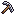

MAIN 2.0 · V4 · LA COLONIA VIVA
Cheddar con arte piloto sobre la arquitectura B (candidata, no aprobada). Toca una estación para acercarte; pica la roca; déjala 30 s sin tocar.
 3.9Qa+1.2Qa/s
3.9Qa+1.2Qa/s
 396Kshop
!
396Kshop
!
GOALNew milestone in CHEESE upgrades: Grand Wheel
NEW
x3COMBO

MINEtapMINELV 62 · AUTOSearching
UP19.1Qa
⋯
PANEL